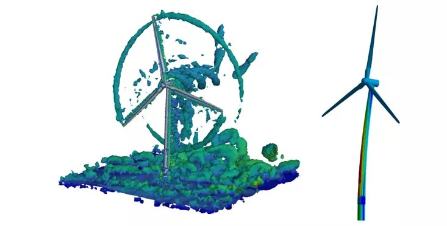
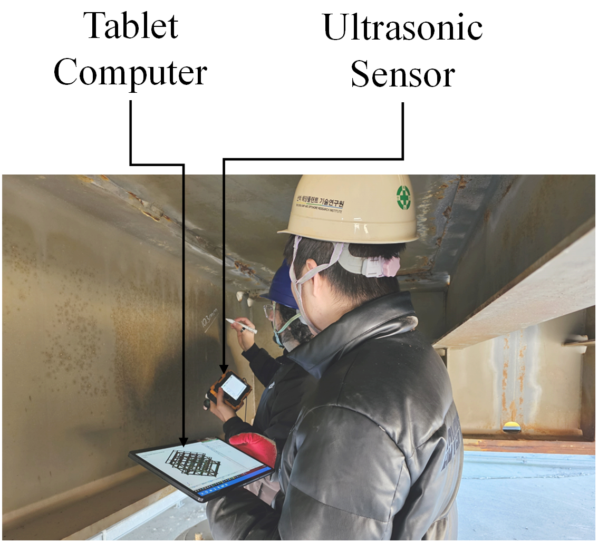
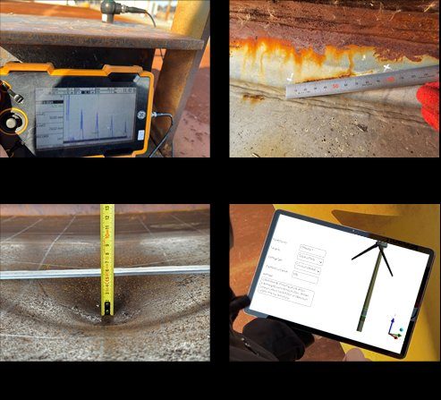
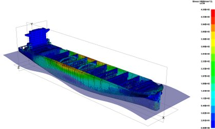
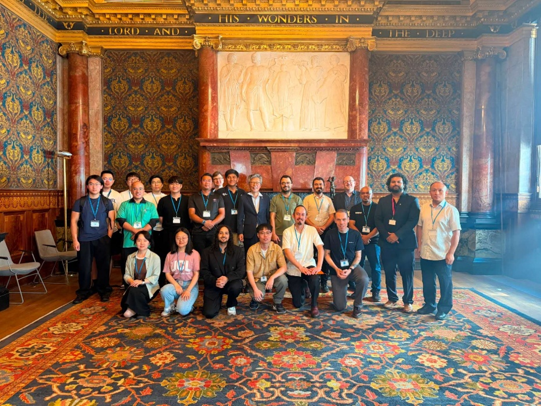
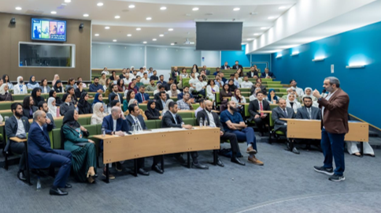
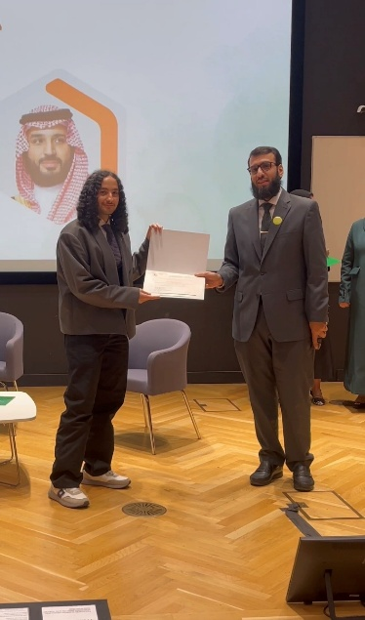
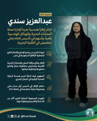

PhD · UCL
AWARDED 2026
51.52°N 0.13°W — LONDON // PHD, UNIVERSITY COLLEGE LONDON
Offshore Structural Engineer·Digital Twins & Coupled CFD–FEA·Structural Integrity & AI
PhD in Offshore Structural Engineering and Digitalisation (UCL, 2026). I build digital-twin systems that keep ageing offshore wind turbines, ships, and marine structures safe: from sensors on the structure to coupled CFD–FEA simulation, AI diagnostics, and predictive maintenance.
Ch.01 — Profile
I assess the structural integrity of ageing offshore structures, and I build the digital systems that monitor, model, and maintain them.
I hold a PhD in Offshore Structural Engineering and Digitalisation from University College London, where I am a Research and Teaching Assistant. My work combines coupled CFD and nonlinear finite element analysis with model verification, benchmark comparisons, inspection-data digitisation, and automated engineering checks.
My doctorate produced a complete, working digital-twin system for ageing monopile offshore wind turbines under extreme storm conditions, the basis of Digital Healthcare Engineering (DHE). It now supports a wider research trajectory of 30+ researchers and collaborators across UCL, Lloyd's Register, and partner institutions internationally.
I document technical methods, interpret model limitations, and communicate findings clearly, through teaching, peer-reviewed publications, and international presentations. Growing up in a coastal city, around the sea and my father's boats, I have always wanted to make the infrastructure we rely on at sea safer, smarter, and more sustainable.
Ch.02 — Expertise
Six capabilities, used together on real structures and proven through peer-reviewed work.
Fully coupled fluid–structure simulation of offshore structures under combined wind, wave, and operational loading.
Serviceability and ultimate limit-state assessment of ageing structures with corrosion, cracking, and denting damage.
High-fidelity digital twins, updated with measured damage, with model verification and benchmark comparisons.
Structural inspection with portable ultrasonic NDT; marine-grade environmental sensing; wave-tank and wind-tunnel testing.
Machine-learning and data-driven models for damage diagnosis, time-variant prediction, and maintenance planning.
Bespoke software for automation, data processing, simulation, and engineering checks; CAD and rapid prototyping.
Ch.03 — The PhD system
Doctoral thesis · UCL · 2026Digital Healthcare Engineering for Life-Cycle Safety and Sustainability of Ageing Monopile Offshore Wind Turbines under Extreme Storm Conditions
I built a high-fidelity digital-twin system that runs the full chain, from sensors on the structure to maintenance decisions on shore, and tested it in the field.
Ultrasonic NDT and environmental sensors digitise damage and conditions on the structure.
Secure transfer of field data from offshore to shore-based analytics.
A coupled CFD–FEA digital twin, updated with the measured damage.
AI diagnostics assess structural health and recommend action.
Time-variant prognostics plan inspection and maintenance across the lifecycle.




Ch.04 — Experience
Department of Mechanical Engineering.
Used CAD to develop product concepts into functional designs, considering how components fit together and operate.
Shadowed a senior project manager on site visits and production facilities, and prepared progress reports for senior management.
Ships and Offshore Structures (Taylor & Francis), since 2024 · Wiley, since 2026 · Journal of Ocean Engineering and Marine Energy, since 2026.
Ch.05 — Publications
Eight peer-reviewed outputs from the doctoral programme: three journal articles (one accepted for publication) and five international conference papers.
Journal articles
Abdulaziz Sindi, Jeom Kee Paik
Abdulaziz Sindi, Hyeong Jin Kim, Igor A. Chaves, Jeom Kee Paik
Abdulaziz Sindi, Hyeong Jin Kim, Young Jun Yang, Giles Thomas, Jeom Kee Paik
Conference papers
Abdulaziz Sindi, Jeom Kee Paik
Abdulaziz Sindi, Jeom Kee Paik
Abdulaziz Sindi, Fang Wang, Giles Thomas, Jeom Kee Paik
Abdulaziz Sindi, Hyeong Jin Kim, Igor A. Chaves, Jeom Kee Paik
Abdulaziz Sindi, Giles Thomas, Jeom Kee Paik
Ch.06 — Recognition
Awards & scholarships
Recognised for developing a maritime digitalisation framework adopted and advanced by 30+ researchers and international collaborators.
University College London, Department of Mechanical Engineering.
Royal Embassy of Saudi Arabia Cultural Bureau, London, for perseverance and initiative in developing the research. The programme was itself named a 2025 Distinguished Innovation Enabler.
Full scholarship via the Saudi Arabian Cultural Bureau, London, funding the entire PhD programme at UCL.
Business and product design category.
Invited talks & engagements
Presented doctoral research on the digitalisation and structural health of ships and offshore structures across the SADIT-MAR programme: TUHH, University of Rostock, UMT Malaysia, UCL, and Lloyd's Register.
Invited to present the research to the Saudi Postdoc Association (forthcoming).
Invited by the UCL Saudi Society to present research to H.E. Abdullah Alswaha at UCL: maritime engineering, structural health, and the DHE framework.
ICSOS 2021 (Hamburg), 2023 (Yantai), 2024 (Chennai); SNAME Maritime Convention 2025 (Norfolk, Virginia).
Professional memberships
In the room




Ch.07 — Education
Thesis: Digital Healthcare Engineering for Life-Cycle Safety and Sustainability of Ageing Monopile Offshore Wind Turbines under Extreme Storm Conditions. Supervisor: Prof. Jeom Kee Paik. Awarded September 2026.
Industry collaboration with Quattro Plant: digital-twin Health & Usage Monitoring System with a multilayer-perceptron neural network for predictive fault, leak, and theft detection on a railroad vehicle, with a commercial business-plan component.
Experimental study of compressive loading on glass-fibre-reinforced polymers; led an industrial group project on city-vehicle aerodynamics with 3D-printed components.
Ch.08 — Contact
For engineering roles, research collaborations, industry partnerships, or talks on digital twins, structural integrity, and lifecycle digitalisation.
London, United Kingdom · UK ILR, no sponsorship required
abdulaziz.sindi@gmail.com